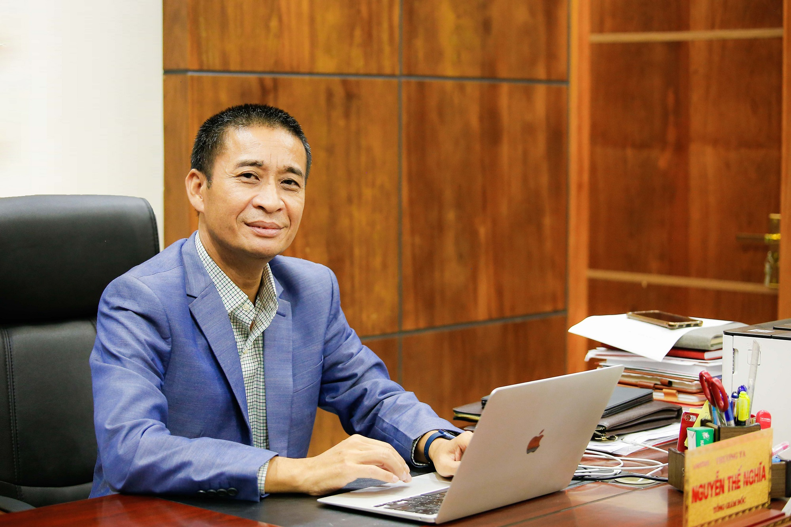
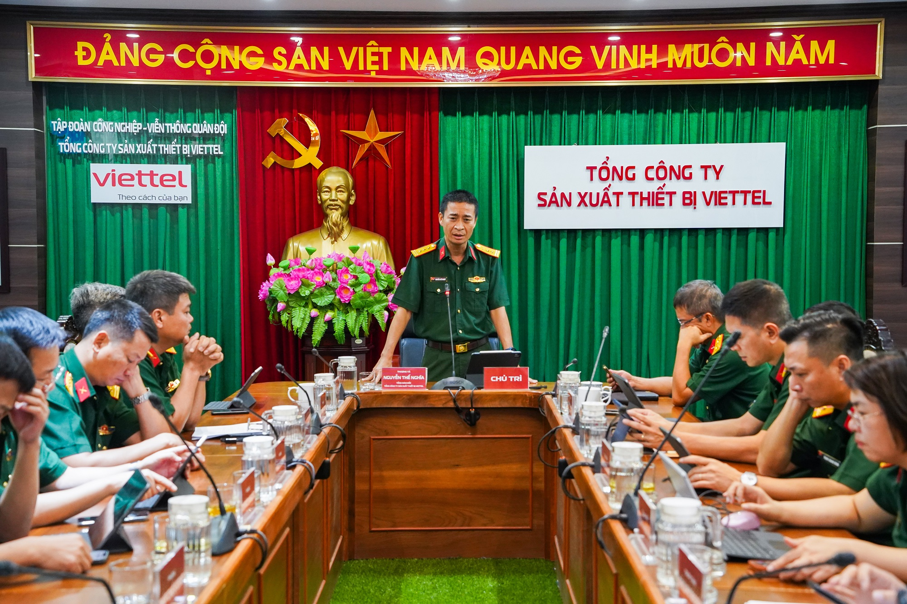

TGĐ VMC Nguyễn Thế Nghĩa: 'Chúng tôi muốn trở thành nhà sản xuất thực thụ'
Nghe bài viết dạng audio

Đồng chí Nguyễn Thế Nghĩa, TGĐ TCT Sản xuất Thiết bị Viettel nhấn mạnh tầm quan trọng của các sản phẩm do đơn vị làm chủ từ khâu nghiên cứu, chế tạo, sản xuất để xây chắc vị thế thương hiệu của VMC.
- Thưa anh, sau hơn 1 năm nhận nhiệm vụ về công tác tại VMC, cảm xúc của anh thế nào trên vai trò là người đứng đầu Tổng Công ty?
Thời điểm được Tập đoàn điều động về công tác tại VMC, tôi thực sự lo lắng vì trước khi sáp nhập và hình thành Tổng Công ty, M1 và M3 đều là đơn vị lớn, giàu truyền thống, có văn hóa và cách làm khác biệt. Trải qua một năm nhiều thăng trầm, tôi cảm nhận được bộ máy tổ chức đã có sự thay đổi, trở nên một khối gắn kết hơn rất nhiều. Mọi người đã thuần thục với luồng quy trình, cách thức tổ chức kinh doanh cũng khác biệt hơn so với các đơn vị tiền thân trước đây.
Một năm trôi qua, dựa trên việc nắm bắt thực tế tình hình đơn vị, tôi và Ban lãnh đạo mới của Tổng Công ty tiếp tục tập trung nâng cao năng lực, đẩy mạnh cải tiến các quy trình để guồng quay sản xuất kinh doanh được hoạt động tốt và hiệu quả hơn. Văn hóa Viettel chúng ta đề cao thích ứng nhanh tạo sức mạnh cạnh tranh, nên mỗi cá nhân, từng bộ phận trong tổ chức chúng tôi luôn học cách thích ứng để phát triển.
- VMC đang trải qua một năm thăng trầm, trong đó có những kế hoạch phải thay đổi so với thực tế. Anh có thể chia sẻ thêm về những khó khăn lớn mà VMC đang phải đối mặt trên con đường xây dựng vị thế tương lai là gì?
Khó khăn lớn nhất đối với VMC đó là hiện tại trừ sản phẩm cáp quang mang thương hiệu, cơ bản chúng tôi vẫn đang chủ yếu khai thác thế mạnh về gia công sản phẩm, kể cả nội bộ Tập đoàn và bên ngoài. Và nếu chỉ gia công thôi thì giá trị gia tăng thấp, không ổn định khi phải phụ thuộc vào đối tác đặt hàng.
Vì thế, chúng tôi đã tiến hành thử nghiệm kinh doanh ra bên ngoài bằng nhiều phương án khác nhau dựa trên các thế mạnh sẵn có từ việc chào hàng; gia công OEM, ODM và cơ khí; phát triển mạng lưới kinh doanh trong và ngoài nước. Nhưng thực tế cho thấy, thị trường đang tràn ngập những sản phẩm cùng phân khúc kinh doanh, trong khi sản phẩm VMC chưa có những tính năng độc quyền để khách hàng sẵn sàng “xuống tiền”.
- Chủ tịch - TGĐ Tập đoàn đã giao nhiệm vụ cho VMC không ngừng mở rộng không gian kinh doanh, tìm kiếm nguồn doanh thu bên ngoài. Tới nay, VMC đã thực hiện nhiệm vụ đó như thế nào?
Thẳng thắn nhìn vào thực tế, xác định rõ những khó khăn và thách thức, tôi và Ban lãnh đạo Tổng Công ty đã có những biện pháp cải tiến, vừa tìm cách tối ưu các sản phẩm hiện có do VMC làm chủ cả về thiết kế, tính năng và chi phí sản xuất, để tạo ra mặt hàng chất lượng đủ sức cạnh tranh với thị trường bên ngoài.
Chúng tôi xác định không đầu tư lại các mô hình sản xuất mà các đơn vị khác đã làm, chỉ tập trung vào các năng lực sản xuất khác biệt, quyết tâm phải xây dựng đội ngũ nghiên cứu, phát triển sản phẩm và tạo ra những sản phẩm mang dấu ấn thương hiệu của VMC. Tương lai, vai trò, uy tín thương hiệu của VMC rất phụ thuộc vào các sản phẩm do VMC nghiên cứu, phát triển mới.
Trong quá trình phát triển, VMC đã nhận được nhiều sự hỗ trợ từ nguồn lực Tập đoàn để đi sâu nghiên cứu các công nghệ lõi trong lĩnh vực mới như năng lượng xanh – năng lượng tái tạo, công nghệ vật liệu… Một năm sau thành lập, song song với việc tiếp tục đóng vai trò nòng cốt trong hệ sinh thái sản xuất của Tập đoàn, gia công OEM, ODM cho các khách hàng; tiếp tục là nhà sản xuất cáp quang lớn nhất Việt Nam… chúng tôi củng cố và tạo ra những sản phẩm mang thương hiệu VMC, trong đó hệ thống điện gió 1kW đã bước vào quá trình thử nghiệm trên mạng lưới Viettel, ắc quy lithium đi vào thương mại hóa và mở rộng thị trường sang Châu Phi.
Trước mắt, định hướng của chúng tôi sẽ phát triển các sản phẩm mang tính chất “may đo”, đặc thù cho một ngành cụ thể, đi vào các thị trường ngách, để tránh sự cạnh tranh với các nhà sản xuất lớn, bao gồm cả các sản phẩm mang hàm lượng nghiên cứu phát triển của Viettel và các đơn vị bạn trong Tập đoàn như AI, kết nối, mô phỏng các tri thức khác…
- Trong vòng 3 - 5 năm tới, mong muốn của anh đối với VMC là gì?
Giai đoạn tới, chúng tôi đặt mục tiêu tăng trưởng trung bình hàng năm của VMC là 27 - 37%. Năm 2025, mục tiêu chiến lược của chúng tôi từ 6.500 đến 8.000 tỷ đồng doanh thu. Đến năm 2030, mục tiêu doanh thu đạt được từ 11.000 - 13.000 tỷ đồng.
Trong tương lai, chúng tôi mong muốn xây dựng VMC trở thành một nhà sản xuất thực thụ, kinh doanh dựa trên các sản phẩm mang thương hiệu và gia công sản xuất theo đơn đặt hàng.
- Anh muốn chia sẻ điều gì nhất nhân dịp 78 năm ngày truyền thống VMC (21/11/1945 - 21/11/2023)?
Tất cả chúng tôi đang tham gia vào một quá trình, giai đoạn, chặng đường trong lịch sử phát triển VMC. Để tiếp nối bề dày truyền thống đơn vị sản xuất thiết bị uy tín hàng đầu trong quân đội, chúng tôi xác định còn nhiều việc cần phải làm, vừa phát huy bản sắc văn hóa, giá trị của người lính thợ, vừa phải cập nhật kiến thức để phù hợp, thích nghi, cạnh tranh hơn trên thị trường, đồng thời bổ sung thêm các đặc tính mới như lính “tri thức”, lính “phát minh”…
Trên con đường đầy thách thức phía trước, tập thể lãnh đạo và CBCNV VMC chúng tôi đã và đang cố gắng, nỗ lực, đoàn kết và thống nhất, cộng hưởng và sáng tạo, kế thừa bề dày truyền thống để hiện thực hóa khát vọng trở thành doanh nghiệp sản xuất công nghiệp công nghệ cao hàng đầu Việt Nam, vươn tầm khu vực và thế giới.
- Xin chân thành cảm ơn anh!
BÀI VIẾT LIÊN QUAN
BÀI VIẾT XEM NHIỀU NHẤT